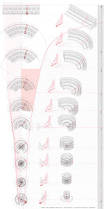

Gergely Kovacs
Studies in Inversion:
Inversion of a Generic Grid
Theo Wyatt Petrides
A Small Rock at the Top of the Hill = A Big Rock at the Bottom of the Hill

Theo Wyatt Petrides
The Sisyphean Engine of Reconstruction or the Perpetual Rebuilding of the Agrigento’s Ancient City
Gergely Kovacs
Lessons from Piranesi I

Sang Hoon Oh
Panama Canal Futures Exchange:
Sculpting in Time

Sayaka Namba
Get Lost: A Qanat Park for Palermo

Drawings that count

Gergely Kovacs
A Spatio-Temporal Plan:
The Society of the Colosseum

Fusako Ishikawa
Writing Architecture in the Gap between the Countable and the Calculated

Karl Kjelstrup-Johnson
Cartography of RelativeIndeterminacy:
Hannibal’s Alpine Passage